Live captures from LocalWP for design / UX evaluation (not Claude Design mockups).
Captured 2026-07-26T11:53:02.184Z · http://localhost:10033 · 1440×900
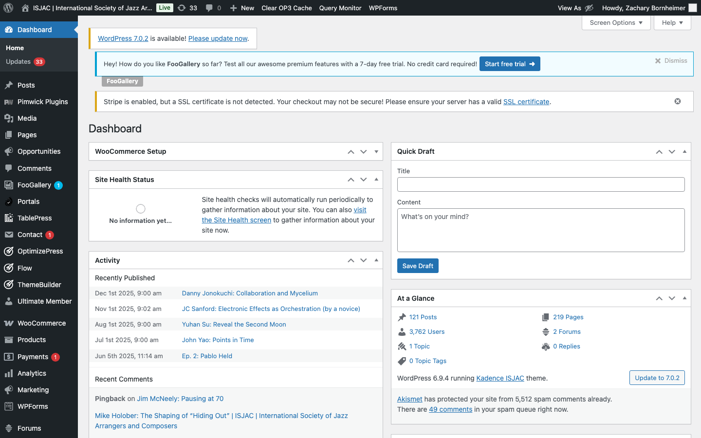
Starting point after login. DragonGate lives under the Portals custom post type.
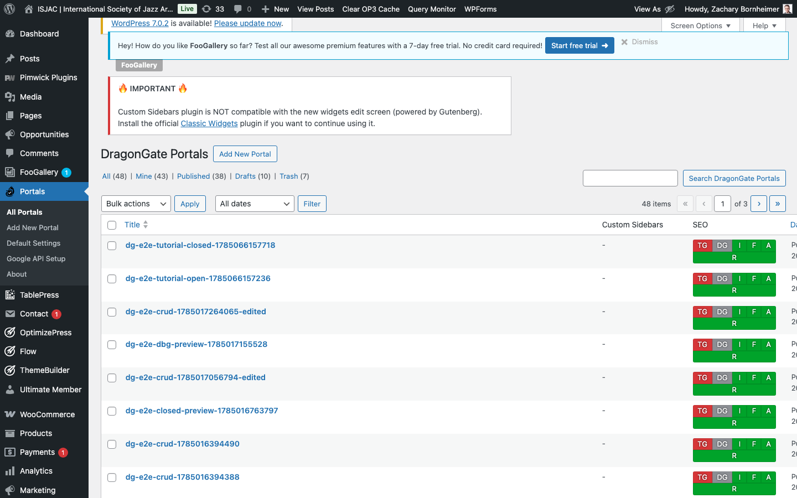
All portals. Create, search, edit, and trash from this screen.
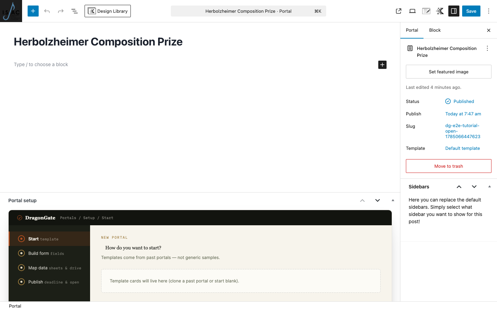
Classic/block edit screen for a portal post. Title and publish controls; definition is attached via REST.
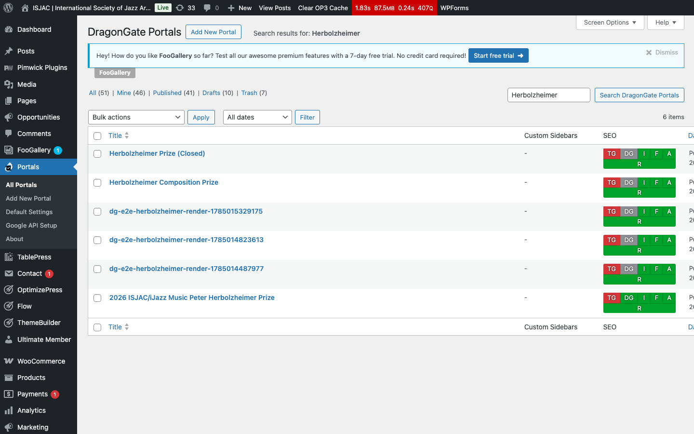
After seeding + rename: open and closed Herbolzheimer portals in the list.
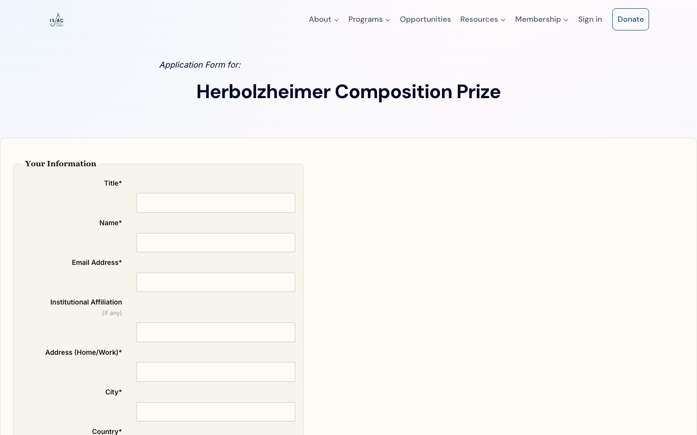
Anonymous visitor sees the definition-rendered form: applicant pack, work title, score, recording.
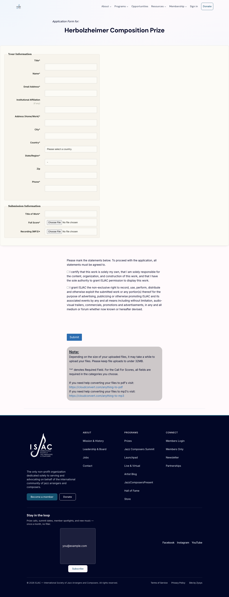
Same open form, full scroll height — useful for layout review.
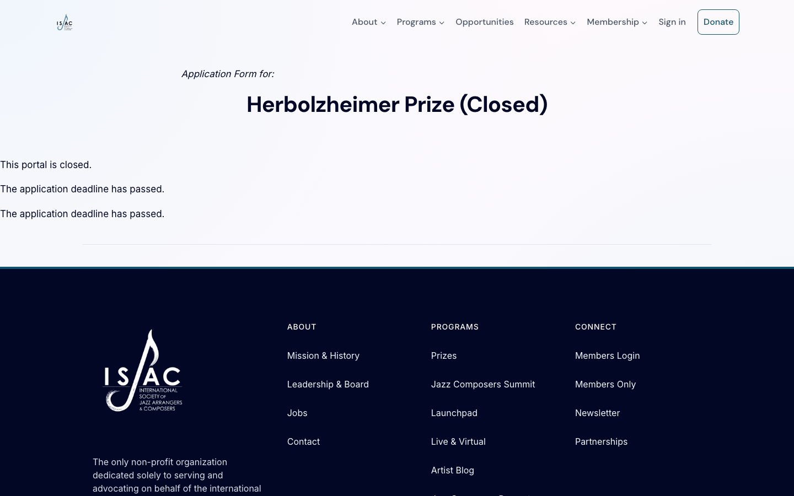
Deadline passed / forceClosed: visitor sees closed copy, not the live form.
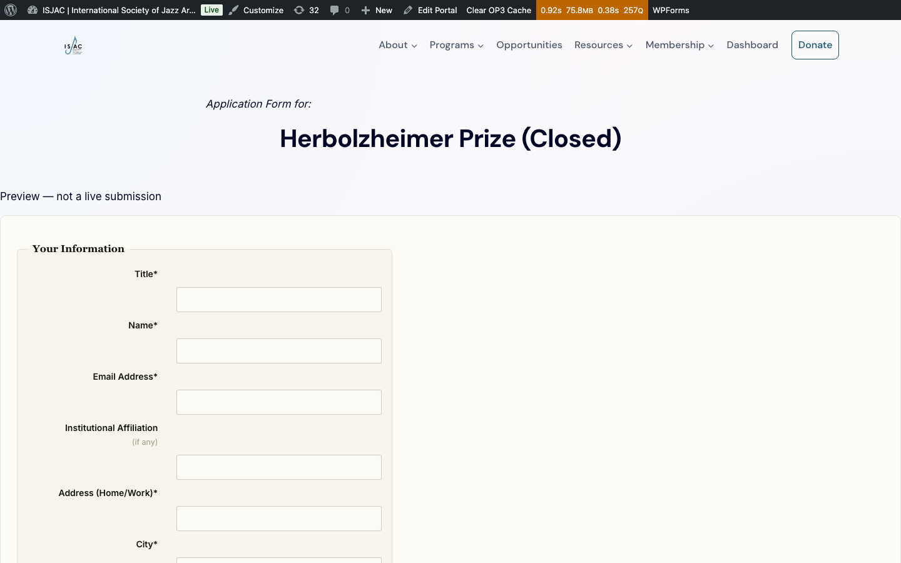
Logged-in editor with ?preview=true: preview banner + definition form (not a live submission).
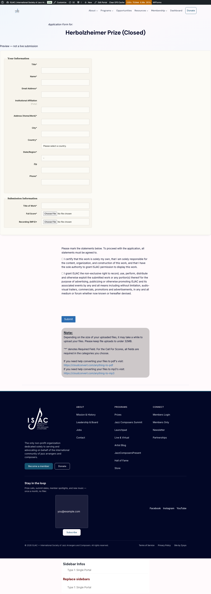
Full-page editor preview for layout review of banner + form stack.
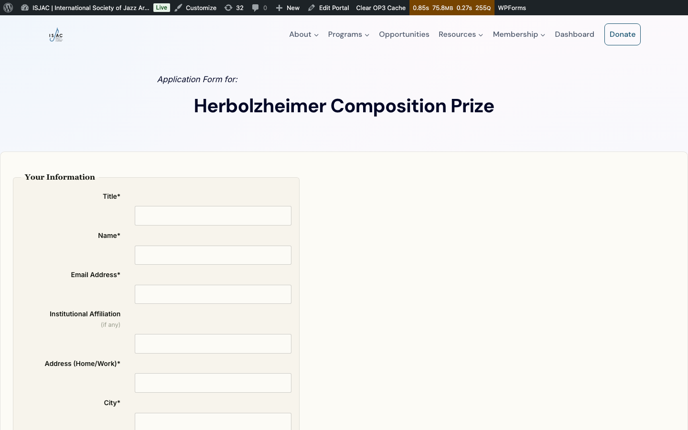
Same open public URL with admin cookies — confirms form render for staff spot-checks.
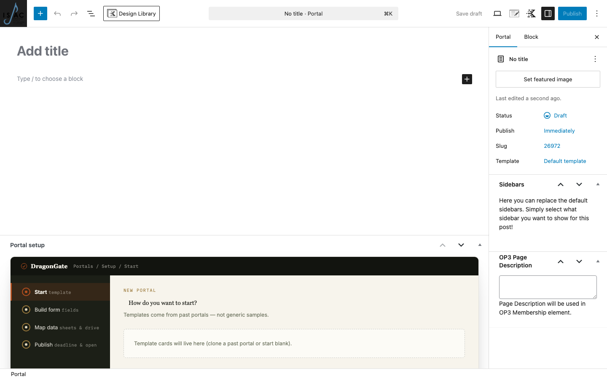
Create flow entry: new portal post editor before definition is attached.